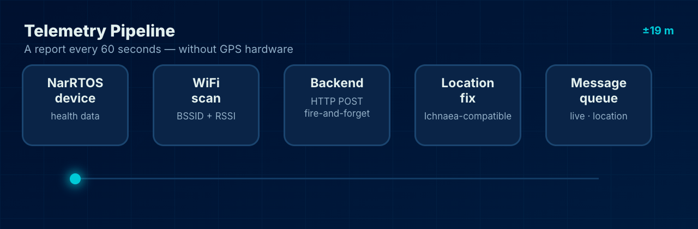
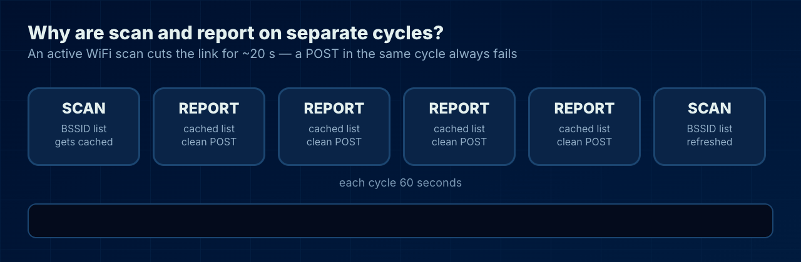
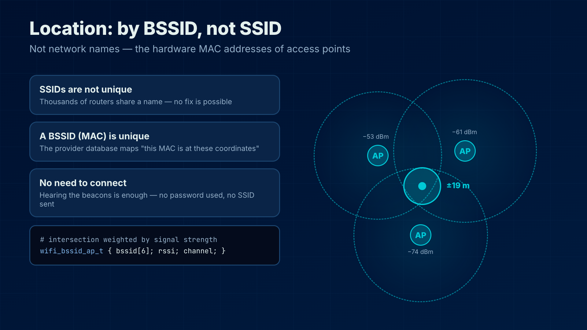
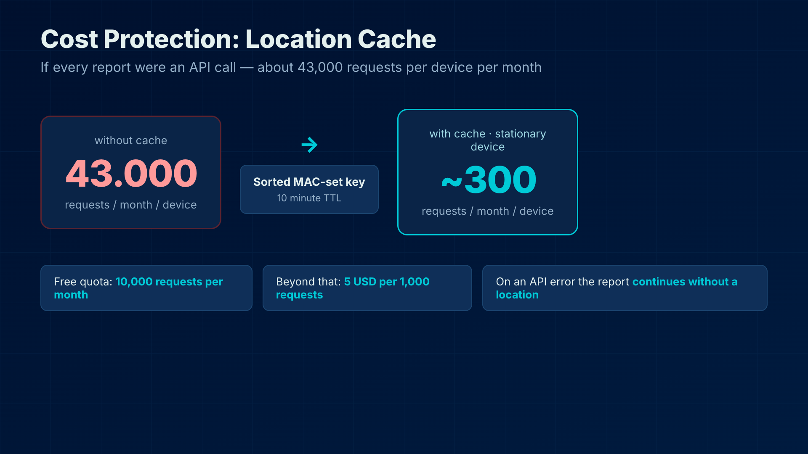
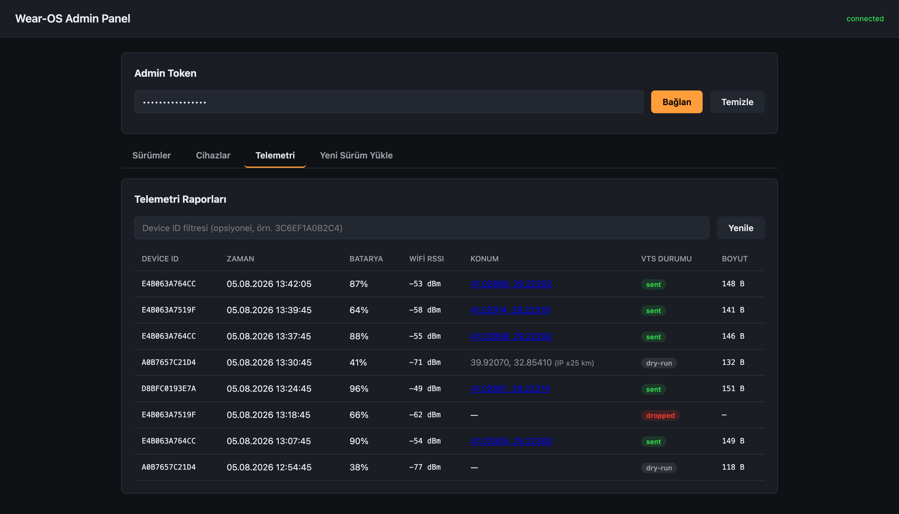

Telemetri ve Konumlandırma
NarRTOS cihazları periyodik olarak sağlık verisi ve çevre WiFi taraması raporlar. Sunucu tarafı bu taramadan cihazın konumunu çözer — GPS donanımı olmadan, yaklaşık ±19 metre hassasiyetle.
Sunucuyu kurmak, konum sağlayıcısını seçmek ve mesaj kuyruğunu bağlamak için Sunucu Kurulumu sayfasından devam edin.
Nasıl çalışır
Zincirin tamamı beş adımdır. Cihaz yalnızca ilk ikisinden sorumludur: ölçmek ve göndermek. Konum çözümü ve dış sistemlere yayın sunucu tarafında olur.

60 saniye
WiFi bağlıysa her turda bir rapor denenir.
5 turda bir
Çevre BSSID listesi tazelenir ve önbelleğe alınır.
Fire-and-forget
Ağ ya da sunucu yoksa rapor atlanır; cihaz etkilenmez.
Tarama ve rapor neden ayrı turlarda?
Aktif WiFi taraması bağlantıyı yaklaşık 20 saniye kesintiye uğratır. Aynı turda hem tarama hem POST yapılırsa rapor hep başarısız olur. Bu yüzden tarama turu yalnızca listeyi tazeler, gönderim bir sonraki turlara bırakılır.

#define TELEMETRY_PERIOD_MS (60 * 1000) // rapor periyodu
#define TELEMETRY_SCAN_EVERY_CYCLES 5 // 5 turda bir tarama
static void telemetry_task(void* arg) {
uint32_t cycle = 0;
for (;;) {
if (wifi_service_is_connected()) {
if (cycle % TELEMETRY_SCAN_EVERY_CYCLES == 0)
refresh_wifi_scan(); // BSSID listesini önbelleğe al
else // (bu tur rapor YOK — bağlantı toparlansın)
send_report(); // önbellekli listeyle temiz HTTP POST
}
cycle++;
vTaskDelay(pdMS_TO_TICKS(TELEMETRY_PERIOD_MS));
}
}Konum: SSID ile değil, BSSID ile
Cihaz, çevredeki erişim noktalarının ağ adlarını (SSID) değil, donanım MAC adreslerini (BSSID) toplar. Sebebi basit: SSID benzersiz değildir, MAC ise tekildir.

- SSID benzersiz değildir; binlerce modem aynı ismi taşır.
- Geolocation sağlayıcılarının veritabanı "bu MAC'li modem şu koordinattadır" eşlemesini tutar.
- Tarama için ağlara bağlanmak gerekmez — yayınları duymak yeterlidir. Şifre kullanılmaz, SSID gönderilmez.
typedef struct { uint8_t bssid[6]; int8_t rssi; uint8_t channel; } wifi_bssid_ap_t;
esp_err_t wifi_service_scan_bssids(wifi_bssid_ap_t* out, uint8_t max, uint8_t* out_count);Bluetooth açıkken tarama tuzağı
BT+WiFi coexistence altında sürücüye özel tarama süreleri verilirse hata üretir.
scan_time alanı 0 bırakılmalıdır — sürücü coex-güvenli
varsayılanı kendi seçer.
Ayarlardaki ağ listesi neden ayrı bir API kullanıyor?
Ayarlar ekranındaki ağ listesi asenkron taramayla SSID döndürür — kullanıcı okusun diye. Geolocation ise senkron API ile BSSID ister. İki farklı amaç, iki farklı çağrı.
Rapor anatomisi
Cihaz ham veriyi gönderir; sunucu konum çözümünü aynı kayda gömer. Aşağıdaki iki sekme, aynı raporun iki aşamasıdır.
{
"device_id": "E4B063A764CC",
"wifi_rssi": -55,
"wifi": [ {"mac": "A4:B1:C2:D3:E4:F5", "rssi": -53}, ... ],
"uptime_s": 887,
"firmware_version": "1.4.81",
"heap_free": 970288
}"geo": {
"lat": 41.0289898, "lng": 29.2229154,
"accuracy_m": 18.9,
"fallback": null, // null = GERÇEK WiFi çözümü; "ipf" = IP tahmini
"provider": "www.googleapis.com"
}Veri dürüstlüğü kuralı
Sağlayıcı erişim noktalarını tanımadığında IP tabanlı kaba tahmine düşebilir. Sapması ±25 km'ye çıkar — testlerde İstanbul'daki bir cihazı farklı bir şehirde gösterdi. Bu yüzden fallback'li sonuç konum sayılmaz.
Fallback'li sonuç koordinat alanlarına yazılmaz ve konum kuyruğuna asla basılmaz. Kaba tahminin konum tüketen sistemlere gitmesi mimari olarak imkânsızdır — panelde bir seçenek değildir.
Maliyet koruması
Önlem alınmasaydı her rapor bir API çağrısı olurdu: cihaz başına ayda yaklaşık 43.000 istek. Önbellek, aynı erişim noktası kümesi için sonucu yeniden kullanır.

Konum API'si hata verse ya da zaman aşımına uğrasa bile rapor konumsuz devam eder. Telemetri akışı hiçbir koşulda konum servisine bağlı değildir.
Panelde nasıl görünür
Raporlar admin panelinin Telemetri sekmesinde listelenir. Konum sütunu, veri dürüstlüğü kuralını doğrudan gösterir: gerçek çözümler tıklanabilir koordinat, IP tahminleri gri metindir.

| Durum | Anlamı |
|---|---|
| dry_run | İletim anahtarı kapalı — mesaj hazırlanır ve kaydedilir ama gönderilmez (güvenli prova modu) |
| sent | Mesaj kuyruğa iletildi |
| dropped | İletim denendi, başarısız — kalıcı kayıt yine tutulur |
Cihazda ekranı yoktur
Telemetri ve konumlandırma başsız (headless) arka plan servisleridir.
Saat üzerinde bunları gösteren bir uygulama ya da ayar sayfası yoktur:
telemetry_service.h yalnızca telemetry_service_init() açar,
ve src/apps/ altındaki hiçbir dosya telemetriye referans vermez.
Cihaz tarafındaki tek görünür çıktı seri port logudur:
I (12034) telemetry: init OK (device_id=E4B063A764CC)
I (12040) telemetry: telemetry loop started (period=60 s, url=...)
I (72118) telemetry: wifi scan refreshed: 7 AP
I (132204) telemetry: report sent (HTTP 200, rssi=-53)
Saatte konum gösteren tek yer Hava Durumu uygulamasının şehir adıdır — ama o
weather_service'in IP geolocation (ip-api.com) sonucudur,
NVS'e önbelleklenir. Buradaki WiFi BSSID konumlandırmasıyla ilgisi yoktur ve
hassasiyeti kilometrelerdir.